SeekSoulOnline也能写代码啦，Jupyter内测体验官招募！
原文：https://mp.weixin.qq.com/s?__biz=MzAwMzIzOTk5OQ==&mid=2247531443&idx=1&sn=5715568b395142a79f837b8f2bf0054f&chksm=9b3c02e3ac4b8bf53668038d9820942b9dd75f0ebed680bdb9e91a6b2baf4e251b26dcb0878a#rd 合集：单细胞云平台

云平台jupyter体验官招募


SeekSoulOnline真的online后，我也没有停下继续开发的脚步，现云平台不仅支持零代码完成单细胞、空转多组学分析，更能够通过jupyter完成代码流程学习。现开启jupyter内测体验官招募，jupyter教程可参考(后台回复关键词Jupyter获取更多教程)：
招募人数：20-30人
体验馆福利：
1.创建账号后我们将向您的账号发放jupyter案例分析权限以及免费使用3个月。学习视频：https://meeting.tencent.com/crm/N8vAv16Jfb
2.分析自己的数据或复现文章（如 https://www.nature.com/articles/s4146 ），完成5种类型以上图形+1种高级分析+3条优化建议，审核通过可延长使用1个月！意见收集表（ https://docs.qq.com/sheet/DU1psWkFLREtUdlhI?tab=BB08J2 ）
3.编写并上传优质Jupyter模板至云平台公共模版（需包含完整流程与注释信息），经评估后可再延长使用1-3个月！。
本次内测官活动截至2025年11月30日

参与方式与使用流程
1、注册、登录云平台登录链接：https://seeksoul.online/t_static/Biomamba/Biomamba.html
2、联系客服微信[Biomamba_zhushou]发送“我要当jupyter内测官”，客服微信会给您开通账号会员权限并抄送测试数据。我们也会拉您进专门群聊沟通后续内测体验相关问题。
3、进入项目客服开通测试数据权限后在“资源总览”中点击“查看”按钮进入项目
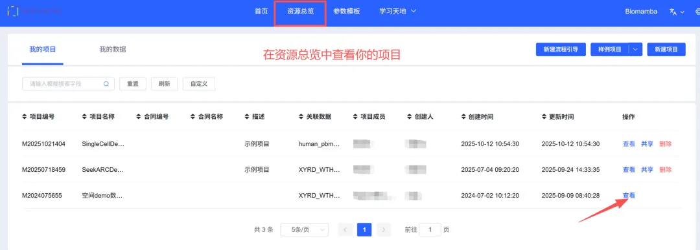
4、进入个性化分析界面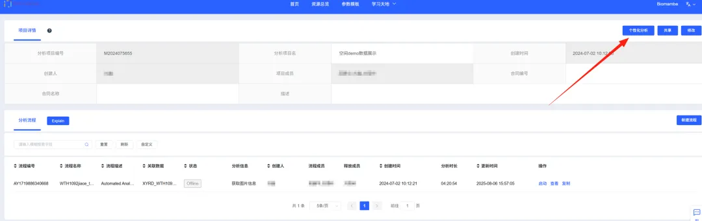
5、快速运行并选择配置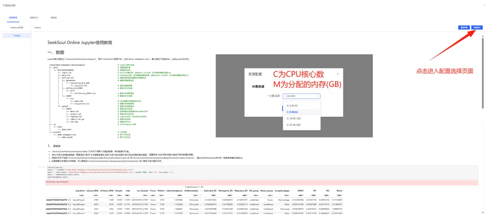
6、查看教程案例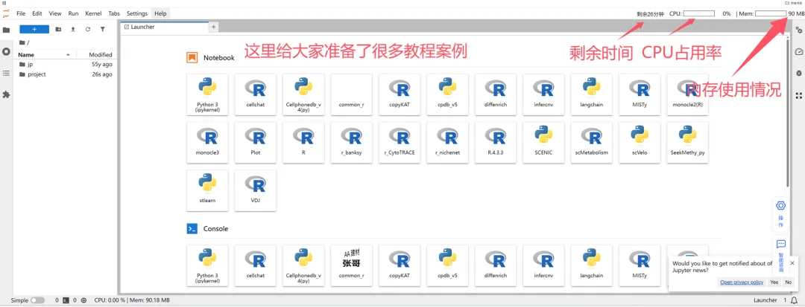
7、选择模板切换进入家目录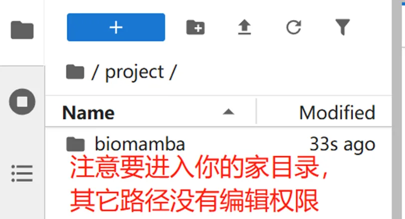
选择并下载模板到计算环境中：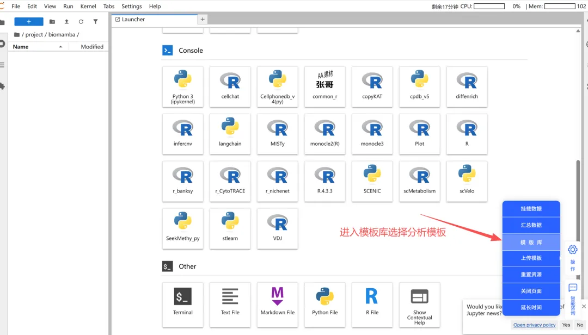
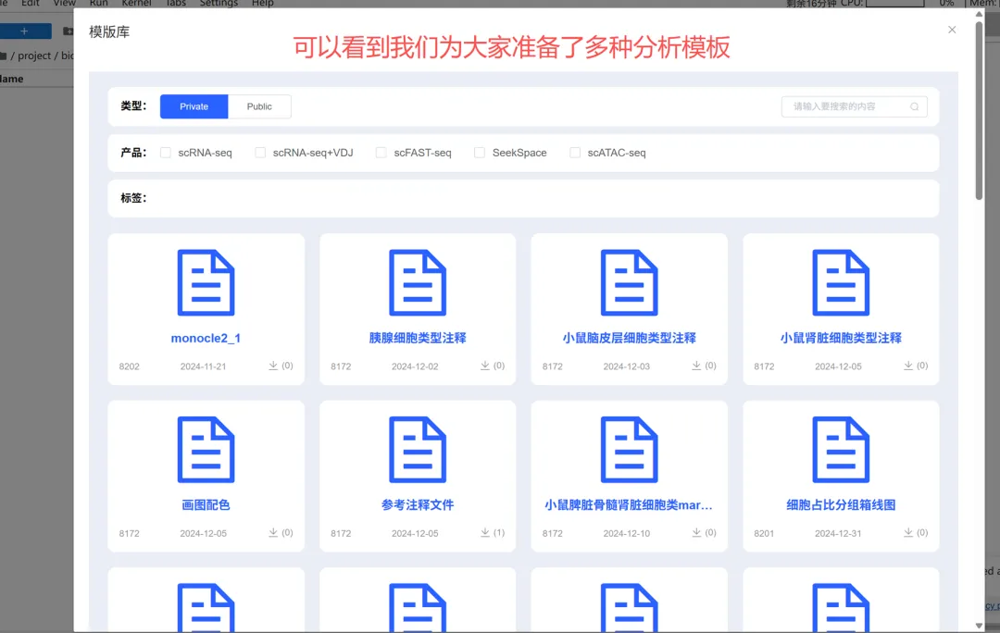
挂载数据：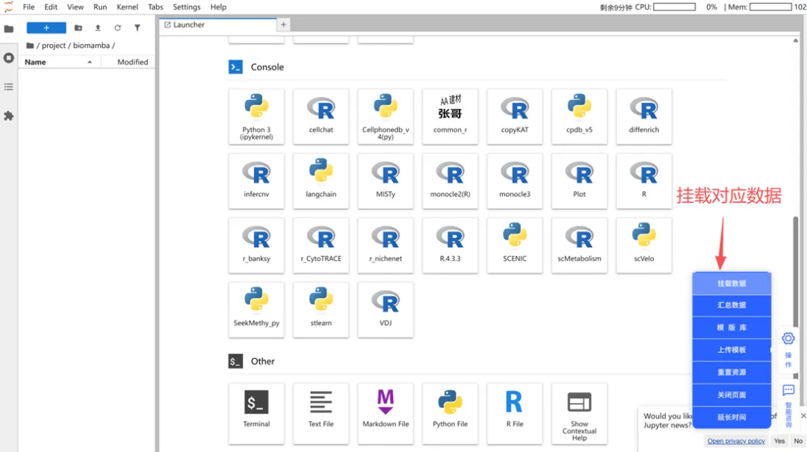
选择你的模板对应的数据：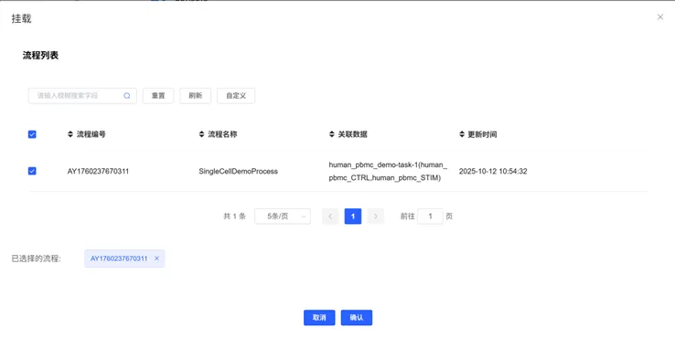
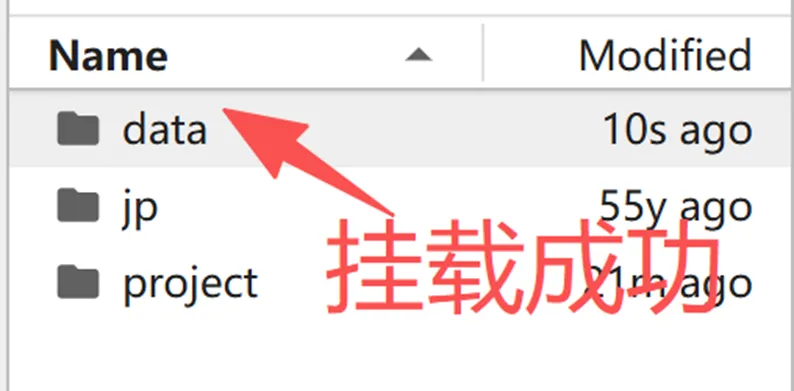
8、快乐学习、快乐分析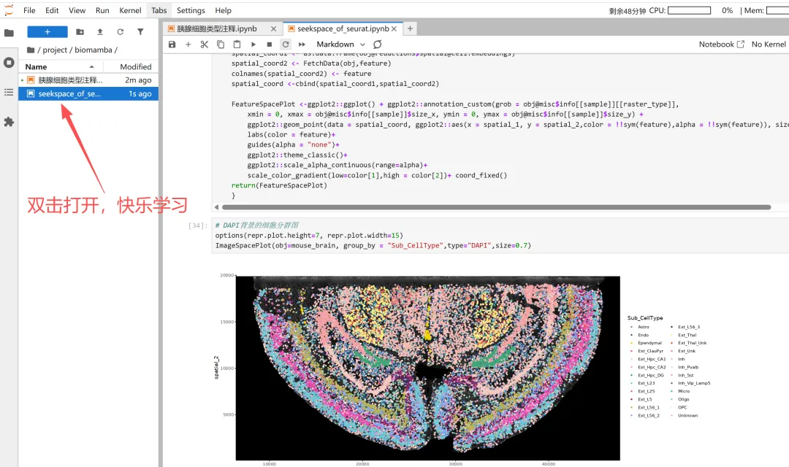

如何联系我们

 留一个领取资料、开箱即用的单细胞分析镜像的微信号[Biomamba_zhushou]，方便各位随时交流。同时我们也构建了交流群矩阵，欢迎大家入群讨论。
大家可以阅读完这几篇之后添加给生信入门初学者的小贴士
没有检索，就没有发言权
留一个领取资料、开箱即用的单细胞分析镜像的微信号[Biomamba_zhushou]，方便各位随时交流。同时我们也构建了交流群矩阵，欢迎大家入群讨论。
大家可以阅读完这几篇之后添加给生信入门初学者的小贴士
没有检索，就没有发言权
已有生信基地联系方式的同学无需重复添加

 您点的每个赞和在看，我都认真当成了喜欢
您点的每个赞和在看，我都认真当成了喜欢